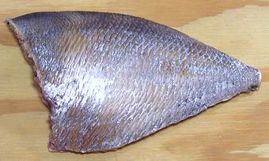
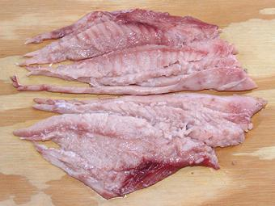
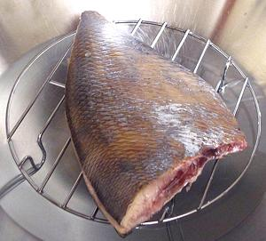
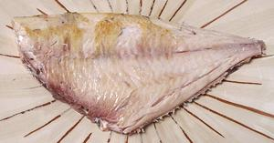

This is a real Pomfret, not something else just called "Pomfret", and a very strange fish it is. It infests most of the Pacific, from Vietnam to Peru, from Alaska to Peru and probably much farther south. It stays near the surface, but stays well offshore. It can grow to 24 inches TL (total length) and 6 pounds, but the photo specimen was 16-3/4 TL (12-1/4 inches SL (Standard Length, doesn't count the tail) and weighed 1 pound 7-14 ounces.
More on Pomfrets.
Pacific Pomfret flesh is medium color and of a pleasant medium flavor. Raw, the flesh is extremely tender, but cooked it is quite firm - firm enough to be used in soups and stews. This fish does, however, present some preparation problems and cannot be handled like most other fish.
Buying: This is a very uncommon fish here in Southern California. It's something you can buy when you see it - if you want to buy it. The photo specimen was purchased from a large Philippine market in Los Angeles (Eagle Rock) for 2019 US $1.29 / pound.
Scales: Don't even think about trying to scale this fish. It is completely covered with the weirdest scales you can imagine - thin, at least 1 inch vertically, and less than 1/4 inch fore to aft, with strong overlap and very strong adhesion. You would pretty much have to pick them off one at a time, and there's a whole lot of them.

Cleaning: This fish is filled with a whole lot of
mushy stuff, especially up in the head, and the gills pull hard. Best
to just cut off the head and pull out most of the guts with it. This has
to be done with strong kitchen shears, as the scales will make knife
cutting difficult. While you have those shears in your hand, trim the
whole fish as shown in the photo to the left. You need to cut off a good
1/2 inch off both top and bottom edges. Now you will be able to work with
it - or, you can cook the whole thing as is (see below).

Fillet: This is not the easiest fish to fillet, and the
best you can get will look like the photo to the left. It's not easy to
locate the bones when you start cutting, and if you don't get right
on them, you'll lose a lot of flesh. In any case, the fillet will start
falling apart on you as you cut, especially down near the tail. Just
trim off the skirt as shown and pick out any remaining rib bones - they
are extremely thin, long, and trail backwards in the fillet.
Now you have to get rid of the skin and all its scales. You can remove it by the usual long knife and cutting board Method, and you can use a bit more angle with the knife than for most fish, because the skin will be tough. Of course, the fillet will fall apart a bit more with skinning.
Now you have to pull a whole bunch of long and nasty centerline pin bones for about half the length of the body cavity. Pull them straight forward and try to hold the flesh together as you pull them so it doesn't tear up even more.
Yield: A 1 pound 8-1/8 ounce fish yielded 9 ounces of skin off fillets (37%). Yield would be a little better cooked pan dressed as shown below.
Stock: Heads, bones, and fins produced a stock with very little oil, but a rather deep yellow color. The taste was a bit strong, but not as bad as I expected. If you want to try it, see our Fish Stock page for details.
 Here, we have the pan dressed Pomfret shown above set on a steaming rack in a wok, ready to be covered and steamed. This is a quick process, so don't wander away.
 Here is the same pan dressed Pomfret with skin and scales removed. I find it easiest to steam only until the scales can be peeled off easily, bring it out, let it cool enough to handle, and peel off the scales. If the water is already boiling, this takes about 2 minutes on one side and 2 minutes on the other. After the scaling, I return it to the steamer to re-warm and finish the steaming.
Once it is cooked through, the flesh will be quite firm. At this point you can eat the whole thing with a light sauce, or, you can carefully pry the fillets from the bones to make two servings. If it is cooked through, it will come off quite easily. A 1-1/2 pound or larger fish will be sufficient for two persons, with sauce and a salad or side.
Of course, the pin bones will still be along the centerline up front,
so you need to eat it carefully. The other long thread bones will be
removed along with the skirt, which will have pretty much disintegrated
as you removed the scales. I always disassemble fish on my plate with
pointy chopsticks, which makes it very easy to locate and remove pin
bones. This fish pulls apart easily enough, but does not flake in an orderly
manner.